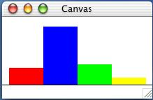

Problem 1:
Develop a function that consumes two Posn structures -- one representing the center of a circle and the other representing a point on its circumference -- and produces the area of the disk enclosed by the circle. Area of a disk = PI * r2.
HtDP Problem Set | Section 6 |
Develop a function that consumes two Posn structures -- one representing the center of a circle and the other representing a point on its circumference -- and produces the area of the disk enclosed by the circle. Area of a disk = PI * r2.
Provide a structure definition and a data definition for a paycheck with check number, name, date, and amount properties.Develop a function to produce a paycheck given the following information: check number, name, date, hours worked, wage, and percent tax reported as a decimal. The amount of the check is calculated by multiplying the hours worked by the wage less any taxes.
Provide a structure definition and a data definition for a game score. A game score is characterized by two pieces of information: a symbol representing the name of the team and a number representing the points that were scored by that team.Develop a function that consumes two scores from a particular game and returns the name of the team that won or 'Tie if the scores were equal.
Provide a structure definition and a data definition for an online auction entry, which is characterized by four pieces of information: the item number, the highest bidder, the current bid, and 'Open or 'Closed.Develop a function that consumes a bidder, a bid amount, and an auction entry then returns a new entry. If the bid amount is less than the current bid or if the auction is closed, then the original entry is returned.
Provide a structure definition and a data definition for ice cubes with mass and velocity properties.
Develop a function that produces a single ice cube from two colliding ice cubes with the following assumptions.
Simultaneously, two ice cubes are sent towards each other along a horizontal track. Because they are traveling in opposite directions, one cube has a positive velocity and the other a negative one. Because the cubes are made of ice, you can assume that the friction between the cubes and the track is zero. However, the cubes are designed to stick together when they meet, resulting in a single cube.
Momentum is conserved: meaning that the sum of the momenta of the original cubes will equal the momentum of the combined cube. Momentum is computed by multiplying an object's mass by its velocity.
The goal of the exercise is to draw a picture with baloons.
Develop the function
pick-color. The function consumes the numbers 0, 1, 2, and 3. For 0, it produces 'red, for 1 'green, for 2 'blue, and for 3 'yellow.Develop the function
draw-baloon. The function consumes two numbers, between 0 and WIDTH and 0 and HEIGHT, respectively, and a color symbol ('red, 'green, 'blue, 'yellow). It draws a baloon on a canvas of size WIDTH x HEIGHT. A baloon consists of a disk, which is described by RADIUS, and a line, which is described by length. Experiment with different values for WIDTH, HEIGHT, RADIUS, and LENGTH to find pleasing proportions.Develop a function that consumes a symbol and draws a baloon at a random place and with a random color (one of: 'red, 'green, 'blue, 'yellow). Use
pick-coloranddraw-baloon.
Note: (random N) computes a random number between 0 and N-1.
Develop the functiondraw-bar-chart. The function accepts four integers between 0 and HEIGHT-20 and draws a bar chart (see picture below).The dimensions of the canvas are WIDTH x HEIGHT. The base-line's y-coordinate is at HEIGHT-20. The width of the bar chart is WIDTH-20. The bars are centered in the remaining space; each of the bars occupies a quarter of the remaining space. Hint: define global constants that compute the fixed parts of the four bars: the x-coordinates of their northwest corner and their width. Here are the first two:
(define X1 10) (define X2 (+ X1 BAR-WIDTH))Picture:

Design a function that draws a Japanese flag. The function consumes the size of the rising sun and produces true. It draws a Japanese flag.
Design a function that draws a German flag. It consumes the location the width of the flag, and the height of the stripes. Its result is true; its effect is to draw the canvas.
| Jamie Raymond | Matthias Felleisen |
01 december 2003 |